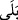
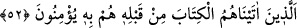
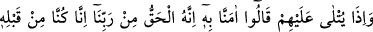
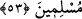
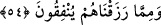

Hud kavmi bu sebeple, Sâlih kavmi şu yüzden helâk oldu diye haber verdik. Belki öğüt
alırlar; önceki kavimlerin uğradıkları azaplara uğramaktan korkarlar.
et-Te’vîlâtü’n-Necmiyye’de der ki: Burada sözün zâhirde onlara ulaştırıldığına ve
bâtınen de mânâsının anlatıldığına işâret vardır. Yâni onlara Kur’ân’ın mânâsını
anlattık; belki mîsak ahdini hatırlarlar. Çünkü onlar “ (evet)” diye cevap vererek îman
etmişler ve tevhidi ikrar etmişlerdi. Belki Kur’ân’ı dinleyince îmanlarını yenilerler.
52. Ondan (Kur an’dan) önce kendilerine kitap verdiklerimiz, ona da îman
ederler.
“Ondan (Kur’an gelmezden) önce kendilerine kitap verdiklerimiz,” -ki bunlar ehl-i
kitap olan mü’minlerdir- “Ona” yâni Kur’ân’a“da îman ederler.” Bu cümle,
mübtedâ’nın haberidir.
Sonra Allah Teâlâ, îmanın gerektirdiği hususu açıklayarak buyurdu ki:
53. Onlara (Kur’an) okunduğu zaman: Ona îman ettik. Çünkü o Rabbimizden
gelmiş hakikattir. Esasen biz daha önce de müslüman idik, derler.
“Onlara (Kur’an) okunduğu zaman:” Ona îman ettik.” Yani, yaratan Rabbimizin
katından indiği doğru ve gerçektir; O’nun kelâmı olduğuna inandık. “Çünkü o
Rabbimizden gelmiş” gerçeğini ve aslını bildiğimiz bir “hakikattir.”
“Esasen biz” o nâzil olmazdan “daha önce de” ona îmân etmiş “müslüman”lar
“idik, derler.”
Bu, onların Kur’ân’a îman ettiklerini beyan eder. Şu anda, sonradan ortaya attıkları
şeylerden değildir. Dolayısıyla onların bu îmanı, önceki kitaplarda Kur’ân’ın
zikredildiğine şâhid oldukları için çok zaman önceki bir durumdur ve onlar Kur’ân nâzil
olmazdan önce de İslam dini üzereydiler.
54. İşte onlara, sabretmelerinden ötürü, mükâfatları iki defa verilecektir. Bunlar